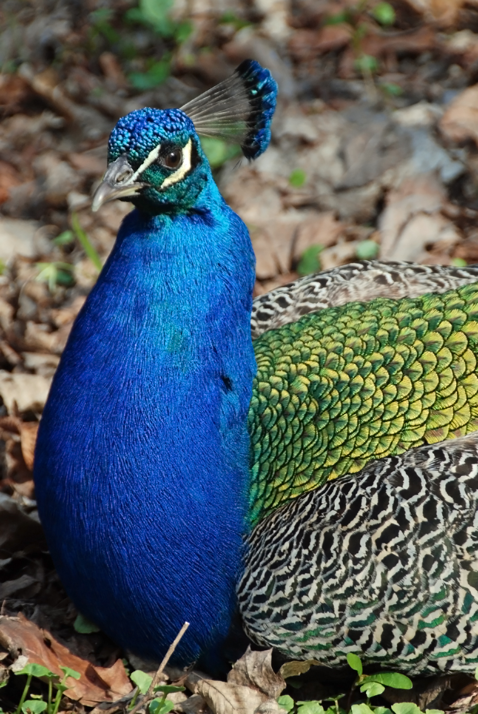

Este es un texto de ejemplo. El pavo real común2 (Pavo cristatus), también conocido como pavo real de la India o pavo real de pecho azul es una especie de ave galliforme de la familia Phasianidae,3 una de las dos especies del género Pavo, que desde tiempos antiguos destacó entre los animales admirados por el ser humano a causa del extraordinario abanico policromado que constituye la cola de los machos.
